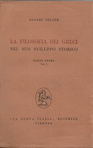

28:21 · 4 OPERE
Pensiero e libertà.
Il filo del discorso
Il rapporto fra libertà e pensiero viene affrontato attraverso due grandi momenti di fioritura culturale scelti dal relatore: la Grecia antica e la Mitteleuropa fra Ottocento e Novecento. La filosofia dei greci di Zeller, nell’edizione italiana collegata a Mondolfo, offre il punto di partenza per interrogare le condizioni della produzione culturale. Un richiamo ai Presocratici di Diels e Kranz introduce anche l’esigenza di dichiarare le fonti, così che il pubblico possa proseguire autonomamente la ricerca. Caldarella accosta poi le rivoluzioni americana e francese al valore della libertà individuale, contrapponendo questa lettura a una spiegazione soltanto economica della cultura. La formula del diritto a essere lasciati in pace apre il tema del rapporto fra cittadino e Stato. Il discorso passa alla democrazia antica e al significato della filosofia, con una distinzione personale fra sapienza e filosofia che porta il relatore a contestare il posto tradizionalmente attribuito a Talete. Lo Stamp Act del 1765 viene quindi usato come esempio della resistenza a un potere fiscale ritenuto arbitrario. Nella parte conclusiva, il confronto si sposta alla politica italiana del 2022: regole di accesso alle elezioni, raccolta delle firme, formazione dei governi e distanza fra forma e sostanza democratica. Sono analogie e giudizi del relatore, distinti dalla cronologia elettorale e dalle procedure costituzionali. La conclusione torna all’idea che la libertà richieda la capacità di pensare e di riconoscere le fonti del proprio discorso.
I libri nel discorso

Dichiarazione d’indipendenza degli Stati Uniti d’America
Identificazione probabile
Facsimile: incisione di Stone del 1823: Documento del 4 luglio 1776 · incisione di William J. Stone del 1823
Riproduzione documentaria dell’incisione di Stone del 1823 conservata dai National Archives. Non è la pergamena originale del 1776, né la copertina di un libro.
Jefferson e la formula delle verità di per sé evidenti rimandano alla Dichiarazione d’indipendenza; titolo non pronunciato.
Passaggio 0:41 ↗ · Fonti e libro ↗
La filosofia dei greci nel suo sviluppo storico
Copertina della Parte prima, volume I: La Nuova Italia · Parte prima, volume I · esemplare datato 1951 dalla libreria
Fotografia autentica della copertina della Parte prima, volume I, con titolo, Zeller e marchio La Nuova Italia. L’opera completa comprende altre parti e tomi; la fotografia non ne costituisce la raccolta integrale. Data 1951 dichiarata dal venditore, non verificata sul colophon e non attribuita al video. Nessun ISBN inventato.
Zeller, Mondolfo, titolo italiano e La Nuova Italia sono espliciti.
Passaggio 1:35 ↗ · Fonti e libro ↗
I Presocratici (Die Fragmente der Vorsokratiker)
Copertina: Bompiani · 2006 · a cura di Giovanni Reale, con testi originali a fronte
Immagine autentica dell’opera, controllata visivamente; l’edizione di riferimento non è attribuita al filmato.
Diels e Kranz e la raccolta dei frammenti sono espliciti.
Passaggio 2:26 ↗ · Fonti e libro ↗
La Repubblica
Identificazione probabile
Copertina: Laterza · La Repubblica · edizione con testo a fronte di riferimento
Immagine associata all’ISBN di riferimento e controllata visivamente; edizione e traduzione non identificate come quelle citate o lette nel video.
Platone e il passaggio dalla democrazia variegata alla tirannide rimandano al libro VIII della Repubblica; titolo non annunciato.
Passaggio 13:59 ↗ · Fonti e libro ↗Minutaggi ricavati da testi automatici, da riascoltare. Le identificazioni probabili sono segnalate accanto ai libri.